CS184/284A Spring 2025 Homework 4 Write-Up
Link to webpage: (TODO) cs184.eecs.berkeley.edu/sp25
Link to GitHub repository: (TODO) cs184.eecs.berkeley.edu/sp25

Overview
Give a high-level overview of what you implemented in this homework. Think about what you've built as a whole. Share your thoughts on what interesting things you've learned from completing the homework. Over the past few weeks I have implemented the basic framework that is capable of simulating cloth physics and how it interacts with light, objects, and itself.Part 1: Masses and springs
Building the Grid
We create this grid by looping through the specified num_width_points and
num_height_points. For each (x, y) coordinate, we calculate the physical spatial position of
the point mass by multiplying its coordinate indices by a step size (defined as the total width or height
divided by the number of points minus 1).
We also check the provided pinned vector to determine if the current coordinate should be fixed
in place. If a coordinate matches a pin location, we set the pinned boolean on that newly created
PointMass to true (rather than ignoring it entirely, so it still exists in the
physics system but its position will not update during integration). We then store all of these initialized
point masses into a single, contiguous 1D array using row-major ordering.
Applying the Springs
Once the points are established, we loop through the grid a second time to connect them. Because our
point_masses vector is 1-dimensional, we access the current point mass using the row-major
index formula: index = y * num_width_points + x.
From here, we evaluate the (x, y) coordinates to apply three distinct types of spring constraints, saving the
resulting Spring objects to our springs vector:
- Structural Springs: We connect a point mass to its immediate neighbor directly to its left and directly above it. This provides the primary tensile strength, preventing the cloth from simply falling apart.
- Shearing Springs: We connect a point mass to its diagonal neighbors (top-left and top-right). This cross-bracing provides resistance against the structural quads collapsing into skewed diamond shapes.
- Bending Springs: We connect a point mass to the neighbor located exactly two spots away to the left, and two spots above. This provides resistance against extreme, sharp folds, ensuring the cloth bends smoothly rather than creasing like paper.
|
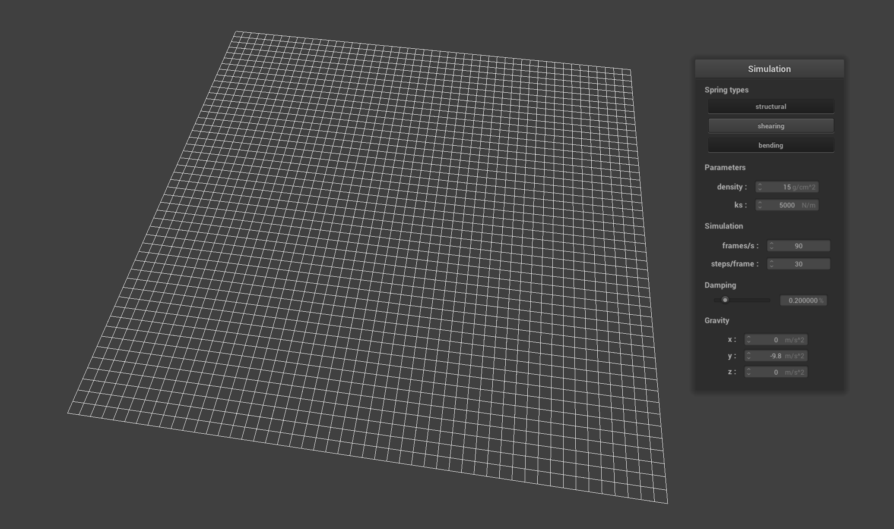 |
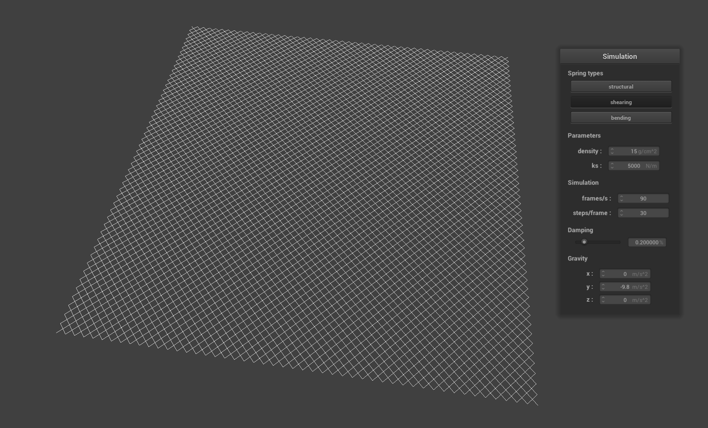 |
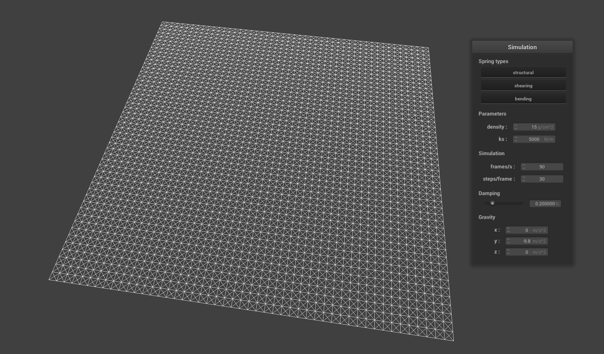 |
Part 2: Simulation via numerical integration
Verlet Integration and Spring Correction
To simulate the cloth’s motion over time, we implement numerical integration, specifically Verlet integration. Instead of explicitly tracking velocity, we calculate the new position of each point mass based on its current position, its previous position, and the total accumulated forces (such as gravity and spring tension) acting on it.
After calculating the new positions, we apply a constraint update. To ensure the cloth does not stretch infinitely or deform unrealistically, we correct the point masses so that no spring is ever stretched beyond 10% of its original resting length during a single time step.
Parameter Experimentation
- Spring Constant (
ks): The spring constant determines how much force is needed to stretch the spring. A lowerksresults in a highly elastic, stretchy cloth that bounces significantly. Conversely, a highkscreates a stiff, rigid cloth that strongly resists deformation. - Density: Density dictates the overall mass of the cloth. A higher density means a heavier cloth, which sags deeply under its own weight and smooths out creases as it pulls downward. A lower density means a lighter cloth, allowing the springs to easily hold their shape with minimal sagging.
- Damping: Damping simulates energy loss over time due to air resistance and internal friction. With very low damping, the cloth swings violently back and forth, taking a long time to come to a complete rest. With high damping, the cloth falls slowly and sluggishly and settles into its resting state almost immediately without oscillating.
The 4-Pin Rest State

Comparing Spring Constants (ks)
|
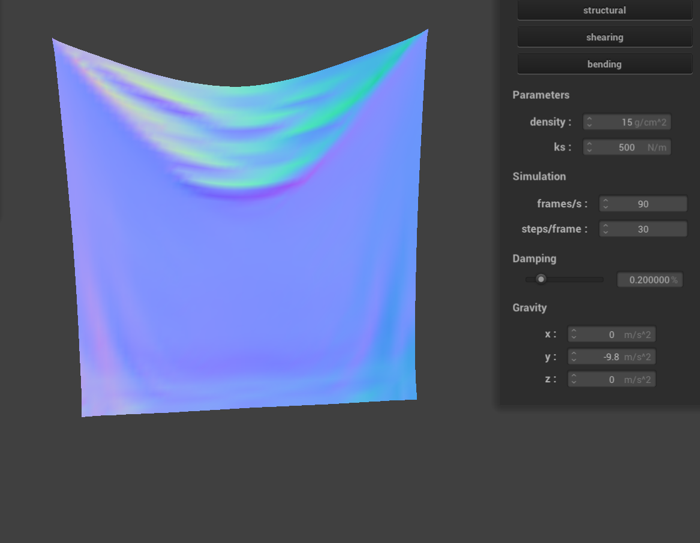 ks (e.g., 500 N/m) |
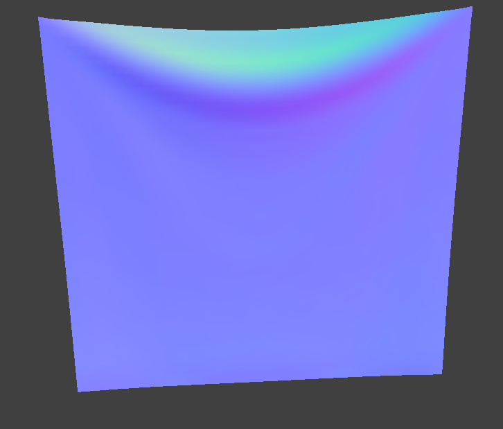 ks (e.g., 50,000 N/m) |
Comparing Density
|
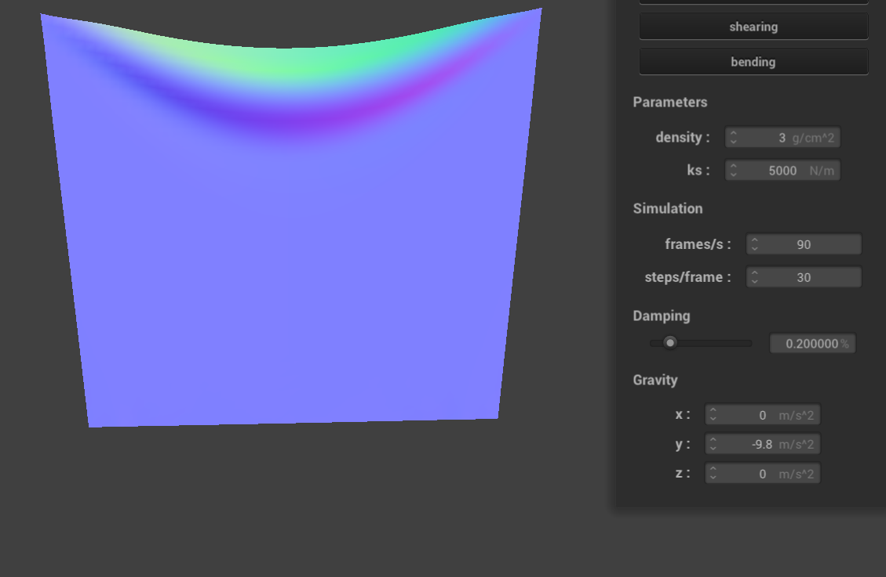 |
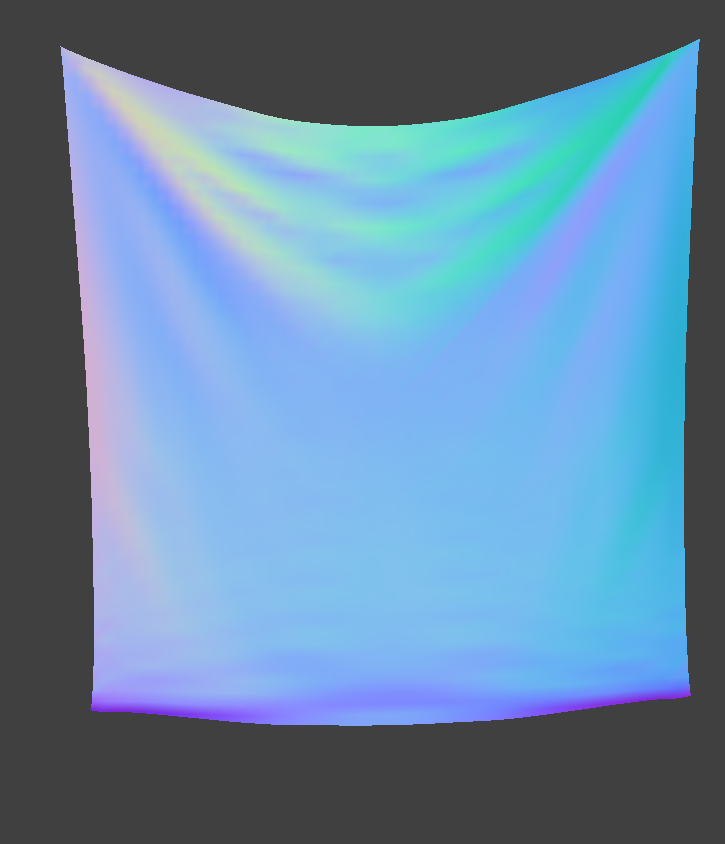 |
Comparing Damping
|
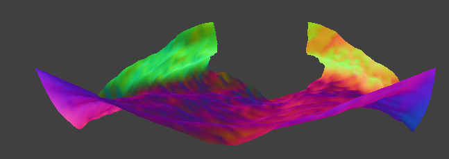 |
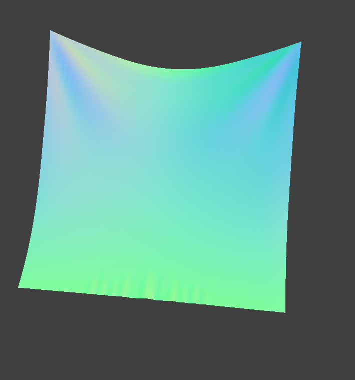 |
Part 3: Handling collisions with other objects
Up until this point, our simulation did not account for other physical objects, meaning the cloth would
simply fall through the floor or any items in its path. In this section, we implemented collision detection
and physical responses for primitive objects, specifically spheres and planes. To apply these checks, we
added a loop inside the simulate() function, right before the spring correction step, to
iterate through all point masses and resolve collisions against all objects in the scene.
Sphere Collisions
To detect a collision with a sphere, we check if the distance from the point mass to the center of the sphere
is less than the sphere's radius. If it is, the point has clipped inside the object. We correct this by
computing where the point mass should have intersected the sphere's surface (by extending a direction
vector from the sphere's origin to the point mass). We then calculate a correction vector to push the point
mass to this surface position, and apply it scaled by a factor of (1.0 - friction) to simulate
physical resistance.
Plane Collisions
Because a plane is infinitely thin, we use a different approach. We check if a point mass crossed from one
side of the plane to the other during the span of a single time step by evaluating the dot products of the
plane's normal with the point's current and previous positions. If the point crossed the boundary, we
calculate the exact point of intersection and push the point mass back up to the correct side. We also add a
small SURFACE_OFFSET to the final position to prevent continuous clipping and visual
z-fighting.
|
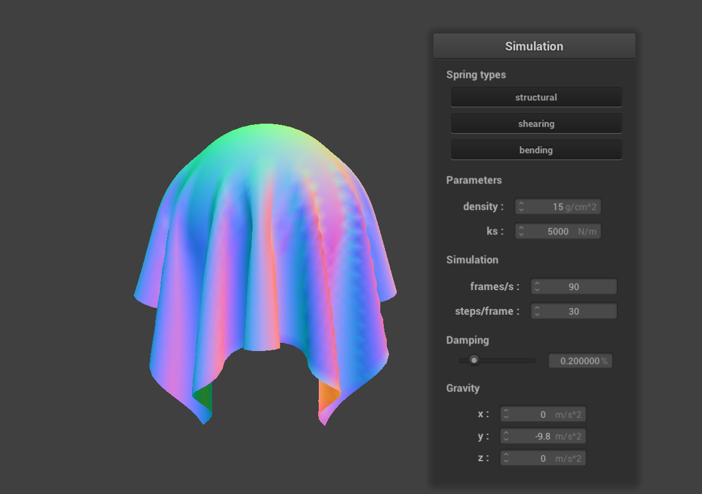 |
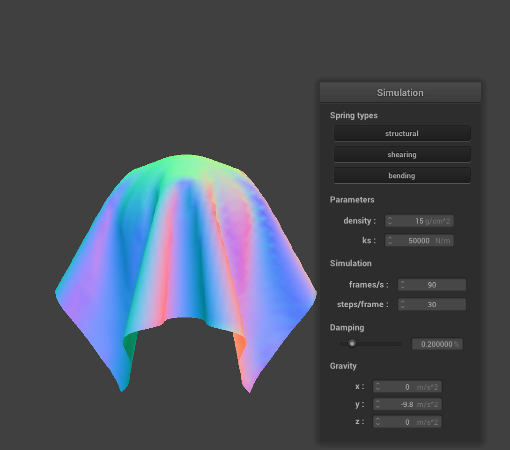 |
|
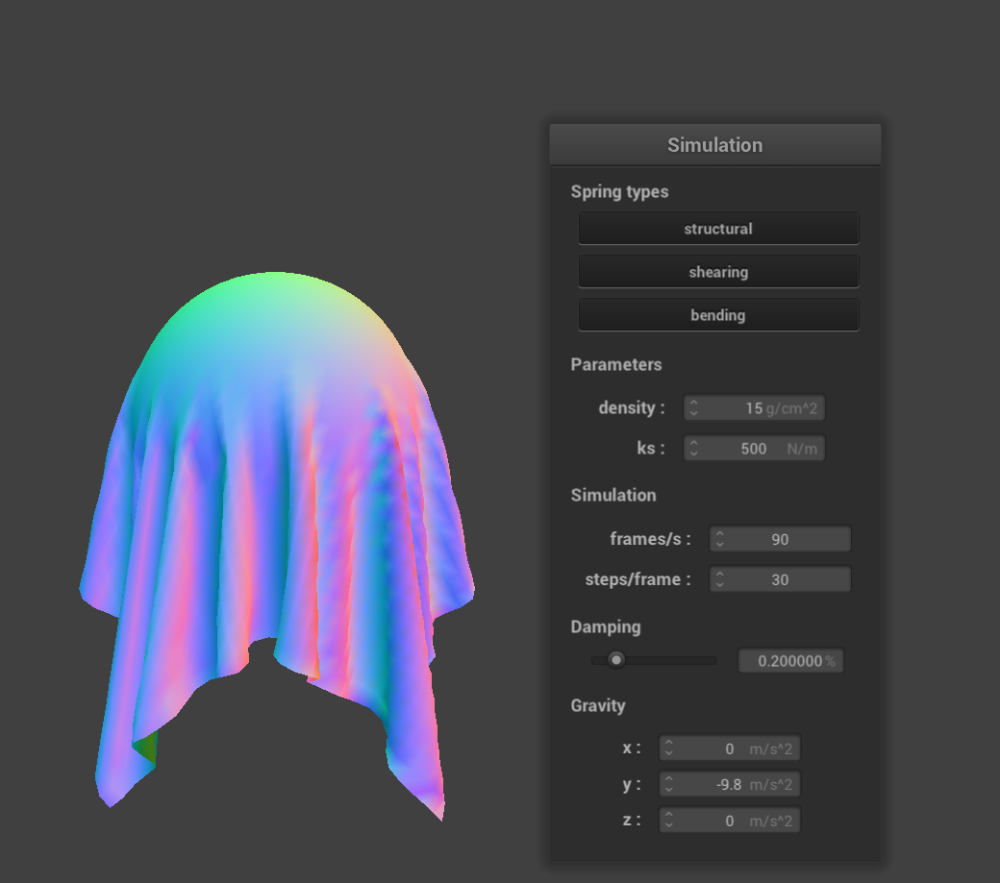 |
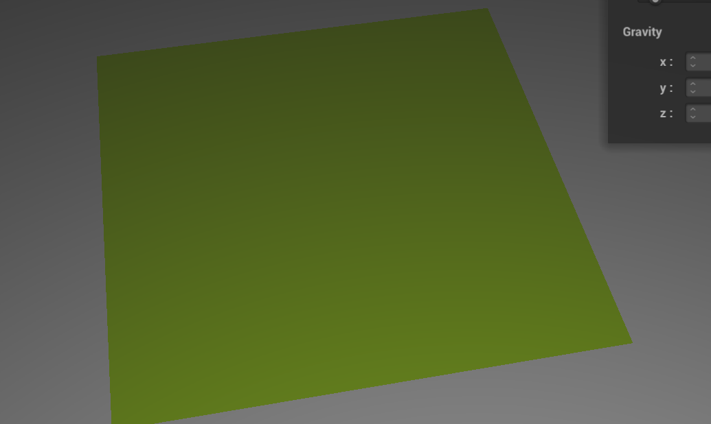 |
Part 4: Handling self-collisions
A naive approach to preventing the cloth from clipping through itself would be to loop over all pairs of
PointMasses, check for invalid distances between them, and apply a correcting force. However,
this is an $O(n^2)$ solution, which is far too computationally expensive for real-time simulations. Instead,
we optimize this process using spatial hashing, which relies on three main methods to group
nearby point masses together.
hash_position()
This function takes a point mass's position and returns a unique float identifier (the hash) representing the
specific 3D bounding box that the point currently occupies. We first partition the 3D space into boxes of
dimensions w, h, and t. By dividing the point's coordinates by these
dimensions and flooring the results, we determine the 3D grid index (x_box, y_box,
and z_box). We then combine these indices mathematically using uniquely large primes to
generate a distinct 1D hash key.
build_spatial_map()
This function populates the spatial hash map (a dictionary mapping a float hash to a vector of
PointMass pointers) that we use to quickly look up neighboring points. We first clear the map
to ensure no residual data remains from the previous time step. Then, we iterate through every point mass in
the cloth, calculate its hash using hash_position(), and add the point mass to the
corresponding vector in the map.
self_collide()
This is the main function used to check and resolve collisions. Given a specific point mass, we look up its
hash and retrieve the list of candidate point masses that share the same bounding box. For every candidate
(that is not the point mass itself), we calculate the distance between the two points. If this distance is
less than 2 * thickness, it means they are clipping. We calculate a correction vector to push
the point mass away so the distance exactly equals 2 * thickness, and add it to a running
adjustment tally. Finally, if any corrections were made, we average the adjustment vector by the total
number of corrections and scale it down by the number of simulation steps (to ensure stability) before
applying it to the point mass's position.
To tie it all together, we added a loop inside the simulate() function, right before the object
collision check, to run this self_collide() logic on every point mass.
Cloth Folding Sequence (Default Parameters)
|
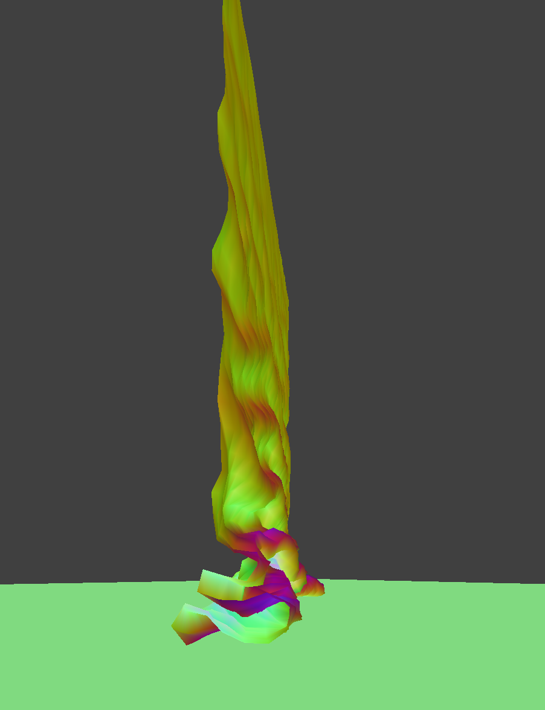 |
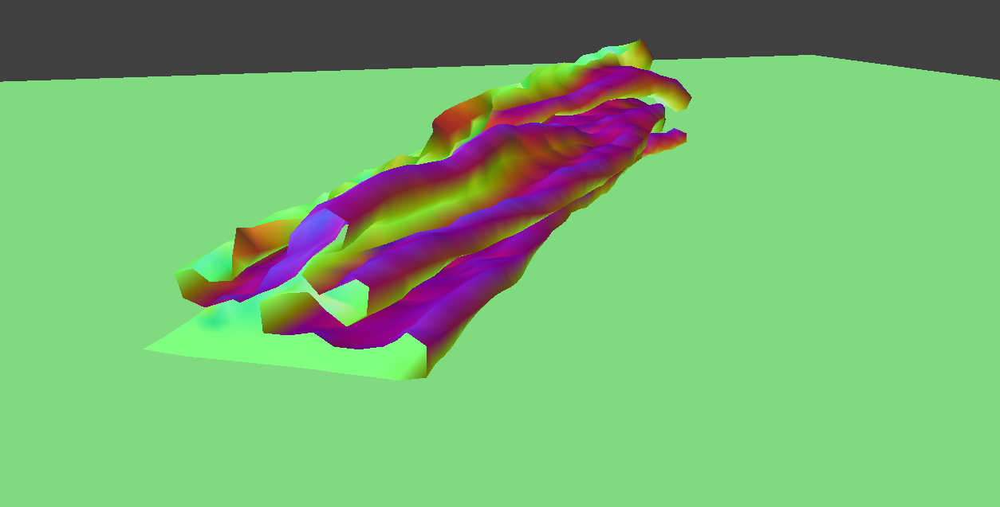 |
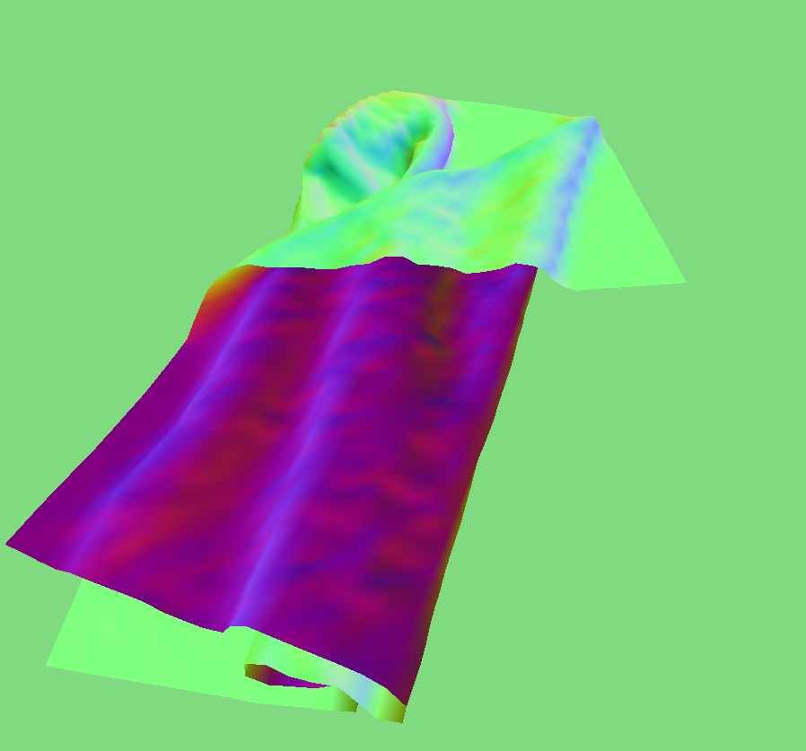 |
Varying Density on Self-Collisions
|
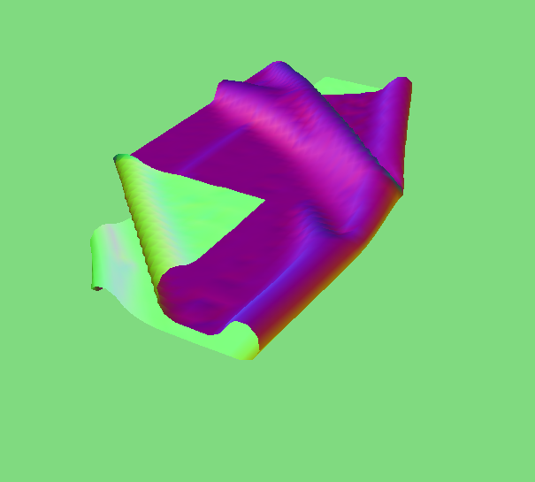 The cloth is light and folds cleanly, creating smooth, wide ribbons as it piles up. |
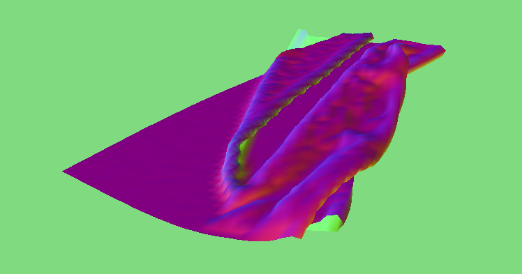 The heavier cloth crumples tightly under its own weight, resulting in chaotic, compressed folds. |
Varying Spring Constant (ks) on Self-Collisions
|
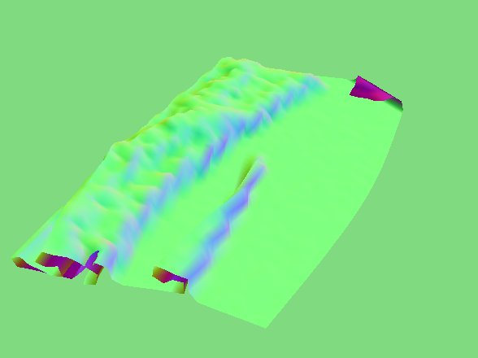 ks (e.g., 500 N/m)The weak springs cause the cloth to ripple and bunch up into a tight, incredibly wrinkled pile. |

ks (e.g., 50,000 N/m)The rigid cloth resists bending, resulting in large, stiff, overarching folds rather than tight crumples. |